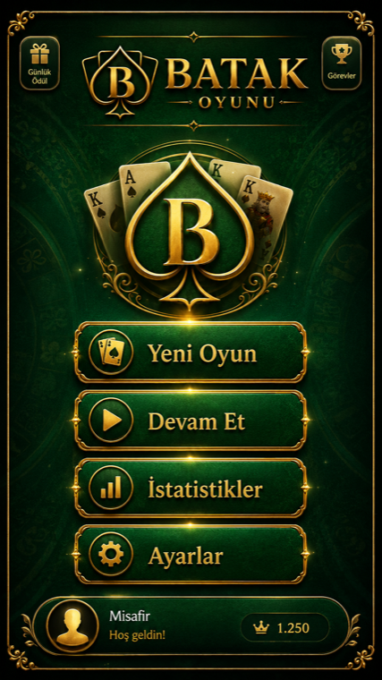

Bot rakipler
Oyuna hemen başlayın; masa düzeni ve hamle akışı mobil ekranda okunaklı kalır.
Klasik kart oyunu
Bot rakiplerle hızlıca masaya oturun, koz belirleyin, elleri takip edin ve skorunuzu geliştirin. Batak Oyunu, tanıdık kuralları sade ve mobil odaklı bir akışla sunar.

Tek oyunculu Batak akışı, hızlı oyun başlatma ve yerel ilerleme takibi için tasarlandı.
Oyuna hemen başlayın; masa düzeni ve hamle akışı mobil ekranda okunaklı kalır.
Oynanan oyun, kazanma durumu, toplam skor ve en yüksek skor cihazınızda tutulur.
Reklam izleme ödülleri yalnızca ödüllü reklam başarıyla tamamlandıktan sonra işlenir.
Mağaza yayınları tamamlandığında resmi indirme bağlantıları bu sayfaya eklenecek.
App Store yayını tamamlandığında iPhone bağlantısı burada yer alacak.
Google Play yayını tamamlandığında Android bağlantısı burada yer alacak.
Oyun akışı, reklam ödülleri, istatistikler veya mağaza bilgileri için destek sayfasını inceleyin.
Destek Sayfasına GitUygulamada hesap veya bulut senkronu yoktur. Reklam gösterimi için Google AdMob kullanılabilir.
Gizlilik Politikasını Oku